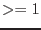
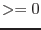

| Parameter | Mand | Type | Default | Constraints |
| Event List Parameters | ||||
| table | yes | table specifier | event list table specifier | |
| A table specifier which must point to an event list table in a data set. It
must be in either of the forms setname or setname:tableid where
setname must be the name of an existing data set and tableid the
name of a table in the specified data set. If the first form, setname,
is used, the event data are sought in the first block of the named data set. | ||||
| filteredset | no | string | filtered.fits | valid file name |
| The name of the file to which the filtered event list is to be written. If this
parameter is set, then keepfilteroutput is automatically set to true. | ||||
| keepfilteroutput | no | boolean | false | true |
| A boolean switch determining whether the result of the filtering
process is to be kept or not. In the former case, the parameters
flagcolumn and filteredset specify the form of the output
from the filtering stage (see above). | ||||
| flagcolumn | no | string | ``EVFLAG'' | column name |
| The name of the integer column used to
store the selection status of a table row in
non-destructive filtering mode, which is activated
if this parameter is set.
If the column does not exist, it will be
created with type int8,
otherwise the existing column will be re-used.
If a table with a flag column
which has been added by a previous non-destructive evselect run
is subsequently filtered in
destructive mode
the flag column gets deleted at the end of the filtering process.
In case the flag column has not been created by evselect, the
bit specified by the parameter
flagbit
is cleared at the end. | ||||
| flagbit | no | integer | -1 | -1-31 |
| In non-destructive filtering mode: the position of the
bit in the integer column named via the
flagcolumn parameter used to store the
row selection status. 0 signifies the least- and the default value -1
the most-significant bit (i.e. 31 for int32, 15 for int16,
7 for int8) respectively. This bit being set flags an event as
selected. | ||||
| Filtering Parameters | ||||
| expression | no | string | ``true'' | valid filter expression according to selectlib syntax rules |
| This is the expression controlling the filtering
process. It's length is in principal unlimited, please note however, that
this is not true for the length of a command line in most UNIX shells.
With this limit being in the range of several kByte, it should not pose a
real problem in practice, though. This parameter and the dssblock parameter cannot be
used at the same time. If both are specified, the one listed on the command line first
takes precedence. | ||||
| dssblock | no | block specifier | ||
| Specifies a block containing data subspace
information. This is converted into a filter expression which is used to filter
the event list. Note that this parameter and the expression parameter cannot be
used at the same time. If both are specified, the one listed on the command line first
takes precedence. | ||||
| General Output Product Parameters | ||||
| writedss | no | boolean | true | true |
| Controls the
writing of data subspace information to the output data files. | ||||
| cleandss | no | boolean | false | true |
| Controls the
use of data subspace cleaning, which deletes components from the
data subspace which select no events from the event list. Recommended
for use by experts only. | ||||
| updateexposure | no | boolean | true | true |
| Update exposure information in event lists
and in spectrum files. For the event lists this means
that new values of the keywords LIVETIME, LIVETInn,
ONTIME, and ONTIMEnn will be calculated, where
nn is the CCD number.
For spectrum files, the EXPOSURE keyword is calculated;
note that this part of evselect is XMM specific | ||||
| filterexposure | no | boolean | true | true |
| Filter EXPOSUnn extentions of an EPIC event list
with the same time filters applied to events in the corresponding
CCD; XMM specific. | ||||
| blockstocopy | no | string list | ||
| List of extensions in the input data set to be copied to any
extracted data product file. This does not apply to output event lists. | ||||
| attributestocopy | no | string list | ||
| List of attributes in the input table to be copied to any
extracted data product table or array. | ||||
| energycolumn | no | string | PHA | name of existing column |
| Name of energy column, used for spectral extraction and for determining the energy range
for light curve extraction. | ||||
| zcolumn | no | string | WEIGHT | name of existing column |
| Column from which to populate
image, spectrum or light curve values. | ||||
| zerrorcolumn | no | string | EWEIGHT | name of existing column |
| Column containing the
error on the zcolumn value, used to calculate errors for extracted products when accumulating
using the zcolumn column. | ||||
| ignorelegallimits | no | boolean | false | true |
| If true, ignore the
TLMIN and TLMAX keywords when determining column extraction ranges. | ||||
| Image Extraction Parameters | ||||
| imageset | no | string | image.fits | file name |
| Name of the image product file. | ||||
| xcolumn | no | string | RAWX | name of existing column |
| Name of column with spatial X-coordinates (for image creation and spectral area determintation). | ||||
| ycolumn | no | string | RAWY | name of existing column |
| Name of column with spatial Y-coordinates (for image creation and spectral area determintation). | ||||
| squarepixels | no | boolean | false | true |
| When ximagesize and yimagesize are set, forces the | ||||
| ximagesize | no | integer | 600 | |
| If set, the size of the image (ie. number of image pixels) along the | ||||
| ximagebinsize | no | real | 1 | |
| If set, the binning factor for | ||||
| yimagesize | no | integer | 600 | |
| If set, the size of the image (ie. number of image pixels) along the | ||||
| yimagebinsize | no | real | 1 | |
| If set, the binning factor for | ||||
| ximagemin | no | real | 1 | |
| If set, the lower limit of | ||||
| ximagemax | no | real | 640 | |
| If set, the upper limit of | ||||
| yimagemin | no | real | 1 | |
| If set, the lower limit of | ||||
| yimagemax | no | real | 640 | |
| If set, the upper limit of | ||||
| imagedatatype | no | string | Real64 | Int8 |
| Data type to use for the output image. If not set, evselect
decides for itself what data
type to use. | ||||
| raimagecenter | no | real | ||
| If set, right ascension for the center of the output image, in decimal
degrees. | ||||
| decimagecenter | no | real | ||
| If set, declination for the center of the output image, in decimal
degrees. | ||||
| Spectrum Extraction Parameters | ||||
| spectrumset | no | string | spectrum.fits | file name |
| Name of the spectrum product file. | ||||
| spectralbinsize | no | real | 10 |  |
| Binning factor for spectrum creation. | ||||
| specchannelmin | no | integer |  | |
| If set, the minimum channel number to consider for spectrum creation. | ||||
| specchannelmax | no | integer | 4095 | |
| If set, the maximum channel number to consider for spectrum creation. | ||||
| Rate Extraction Parameters | ||||
| rateset | no | string | rate.fits | file name |
| Name of the time series product file. | ||||
| timecolumn | no | string | TIME | name of existing column |
| Name of column for time coordinate (to be used in rates files creation). | ||||
| timebinsize | no | real | 1 | |
| Size of time bins for the time series files. | ||||
| timemin | no | real | ||
| If set, the earliest time to consider in time series file creation. | ||||
| timemax | no | real | 1000 | |
| If set, the latest time to consider in time series file creation. | ||||
| maketimecolumn | no | boolean | false | true |
| If true, include a time column in the FITS table when creating a time series.
If false, the table will only include a COUNTS column and the necessary
keywords to deduce the time for each bin. | ||||
| makeratecolumn | no | boolean | false | true |
| If true, produces a lightcurve containing a RATE, rather than a
COUNTS column. An ERROR column is also produced. | ||||
| Histogram Extraction Parameters | ||||
| histogramset | no | string | histo.fits | file name |
| File name for the histogram. | ||||
| histogramcolumn | no | string | TIME | column name |
| Name of the column from which to extract the histogram. | ||||
| histogrambinsize | no | real | 1 | |
| Binning factor for histogram extraction. | ||||
| histogrammin | no | real | ||
| If set, the lower limit for histogram extraction. | ||||
| histogrammax | no | real | 1000 | |
| If set, the upper limit for histogram extraction. | ||||
| Parameter | Mand | Type | Default | Constraints |